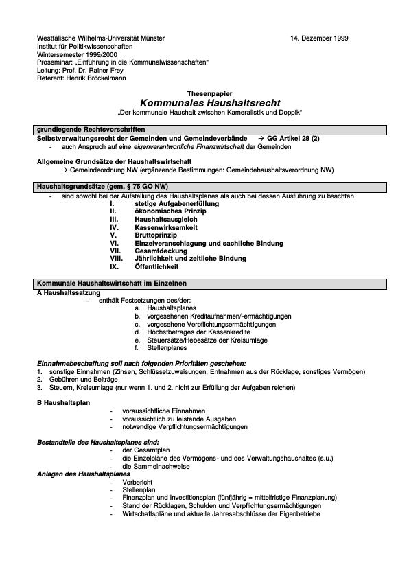

Lukas / Rheindorf, Haushaltsrecht Rheinland-Pfalz - myDVP - Deutsche Verwaltungspraxis Schriftensammlung
Aktuelles Wir über uns Herzlich Willkommen Produkte Vorschriftensammlungen Inhaltsübersichten & Vorworte Lukas/Rheindorf Gesetzesdatenbank Zeitschrift E-Paper-Anmeldung Inhalte & Editorials Über die Zeitschrift Schriften- und Lehrbuchreihen Fallbearbeitungen Fall 1 Das neue Wohnhaus Fall 2 – Das Szene-Cafe Fall 3 – Eine Gemeinderatssitzung Fall 4 – Ein Schaden an der Toreinfahrt Fall 5 – Die sondernutzungserlaubnispflichtige Zufahrt zu einer öffentlichen Strasse Fall 6 – Veranstaltungsverbot im Rotlichtmilieu Fall 7 – Eine Verbandsgemeinderatssitzung in Rheinstein Fall 8 – StrassenumbenennuNG in Komberg Fall 9 – Wiedergestattung eines Gewerbes Fall 10 – Einreise der Anna Smirnowa in die BRD Fall 11 – Die vermüllte Wohnung Fall 12 Der abgestellte Motorroller Fall 13 Fortsetzung des Falls 10 Einreise der Anna Smirnowa in die BRD Fall 14 Die verbrannte Heckenschere Fall 15 Nicht nur die Schafe sollen mähen! Fall 16 – Die abgelaufene Gewerbeerlaubnis Fall 17 Krokodile im Bergzoo! Autoren | Redakteure Vorschriftensammlung Schriften- und Lehrbuchreihen Kooperationen Vorschriftensammlung Kooperationen Schriften- und Lehrbuchreihen Shop DVP Vorschriftensammlungen DVP Erg.-Lieferungen DVP Online / Gesetzesdatenbank DVP Zeitschrift & E-Paper DVP Zubehör Lukas/Rheindorf Schriftenreihen DVP Kommunale Hochschule für Verwaltung in Niedersachsen NSI Mayener Schriftenreihe Rheinland-Pfalz Lehrbuchreihen Studieninstitute für kommunale Verwaltung in NRW Skriptenreihe Sachsen-Anhalt SIKOSA Brandenburgische Kommunalakademie Hessischer Verwaltungschulverband HVSV Login Anmelden / Registrieren (Shop) Anmelden (Gesetzesdatenbank) Anmelden (E-Paper) Instagram Kontakt slogan Anmelden Herzlich willkommen! Melden Sie sich an Passwort vergessen? Passwort zurücksetzen Aktuelles Wir über uns Herzlich Willkommen Produkte Vorschriftensammlungen Inhaltsübersichten & Vorworte Lukas/Rheindorf Gesetzesdatenbank Zeitschrift E-Paper-Anmeldung Inhalte & Editorials Über die Zeitschrift Schriften- und Lehrbuchreihen Fallbearbeitungen Fall 1 Das neue Wohnhaus Fall 2 – Das Szene-Cafe Fall 3 – Eine Gemeinderatssitzung Fall 4 – Ein Schaden an der Toreinfahrt Fall 5 – Die sondernutzungserlaubnispflichtige Zufahrt zu einer öffentlichen Strasse Fall 6 – Veranstaltungsverbot im Rotlichtmilieu Fall 7 – Eine Verbandsgemeinderatssitzung in Rheinstein Fall 8 – StrassenumbenennuNG in Komberg Fall 9 – Wiedergestattung eines Gewerbes Fall 10 – Einreise der Anna Smirnowa in die BRD Fall 11 – Die vermüllte Wohnung Fall 12 Der abgestellte Motorroller Fall 13 Fortsetzung des Falls 10 Einreise der Anna Smirnowa in die BRD Fall 14 Die verbrannte Heckenschere Fall 15 Nicht nur die Schafe sollen mähen! Fall 16 – Die abgelaufene Gewerbeerlaubnis Fall 17 Krokodile im Bergzoo! Autoren | Redakteure Vorschriftensammlung Schriften- und Lehrbuchreihen Kooperationen Vorschriftensammlung Kooperationen Schriften- und Lehrbuchreihen Shop DVP Vorschriftensammlungen DVP Erg.-Lieferungen DVP Online / Gesetzesdatenbank DVP Zeitschrift & E-Paper DVP Zubehör Lukas/Rheindorf Schriftenreihen DVP Kommunale Hochschule für Verwaltung in Niedersachsen NSI Mayener Schriftenreihe Rheinland-Pfalz Lehrbuchreihen Studieninstitute für kommunale Verwaltung in NRW Skriptenreihe Sachsen-Anhalt SIKOSA Brandenburgische Kommunalakademie Hessischer Verwaltungschulverband HVSV Login Anmelden / Registrieren (Shop) Anmelden (Gesetzesdatenbank) Anmelden (E-Paper) Instagram Kontakt slogan myDVP Deutsche Verwaltungspraxis Schriftensammlung Startseite Lukas / Rheindorf Lukas / Rheindorf, Haushaltsrecht Rheinland-Pfalz
Lukas / Rheindorf, Haushaltsrecht Rheinland-Pfalz
26,00 € – 30,00 €
Artikelnummer: 978-3-7869-1081-7 Kategorie: Lukas / Rheindorf Schlagwörter: Haushaltsrecht , Lukas , Rheindorf , Rheinland-Pfalz , Vorschriftensammlung Beschreibung
Beschreibung
Die Sammlung Haushaltsrecht Rheinland-Pfalz, begründet von Helmut Lukas, erscheint seit dem 1. Juli 2017 im Maximilian Verlag Hamburg. Das Grundwerk umfasst 880 Seiten mit Register. Es erscheint i.d.R. eine Ergänzungslieferung jährlich.
Der Preis von 26,00 € brutto bezieht sich auf die Lieferung des Werkes zur Fortsetzung. Möchten Sie das Werk einmalig bestellen, kostet es 30,00 €.
Wir liefern das Werk auf Stand der 40. Ergänzungslieferung von Mai 2020 aus.
Download Inhaltsübersicht
Download Vorwort und Änderungsübersicht
Ähnliche Produkte
DVP Bund u. Land Rheinland-Pfalz Online
220,00 € In den WarenkorbDVP Bund
62,90 € – 79,90 €Ausführung wählen
DVP Rheinland-Pfalz
39,90 € – 51,90 €Ausführung wählen
Rheinland-Pfalz 61. Erg.-Lieferung
22,90 € In den Warenkorb Shop-Kategorien DVP Vorschriftensammlungen DVP Erg.-Lieferungen DVP Online / Gesetzesdatenbank DVP Zeitschrift & E-Paper DVP Zubehör Lukas / Rheindorf Schriftenreihen Lehrbuchreihen WarenkorbAktuelle Beiträge
eGov-Campus
24. November 2020Prämierung der besten Arbeiten an den Hochschulen für den öffentlichen Dienst
9. November 2020Tarifeinigung für Bund und Kommunen
26. Oktober 2020Neuigkeiten
Herbst 2020 Informationen und Hinweise
24. Juni 2020Lieferbarkeit der Grundwerke
12. Oktober 2020Bestellformular DVP Vorschriftensammlung
20. April 2020 Kategorien DVP Vorschriften-sammlungen DVP Erg.-Lieferungen DVP Online / Gesetzesdatenbank DVP Zeitschrift & E-Paper DVP Zubehör Lukas/Rheindorf Schriftenreihen Lehrbuchreihen Ihr Portal AGB Datenschutz FAQ Impressum Kontakt Newsletter Redaktion Widerrufsrecht Maximilian Verlag GmbH & Co. KGStadthausbrücke 4
20355 Hamburg
Telefon: (0 40) 70 70 80-01
Fax: (0 40) 70 70 80-324
Kontaktieren Sie uns:
info(at)mydvp.de AGB Datenschutz Impressum Kontakt Nutzungsbedingungen Widerrufsrecht © 2019 MAXIMILIAN VERLAG HAMBURG
Alle Preise inkl. der gesetzlichen MwSt.
